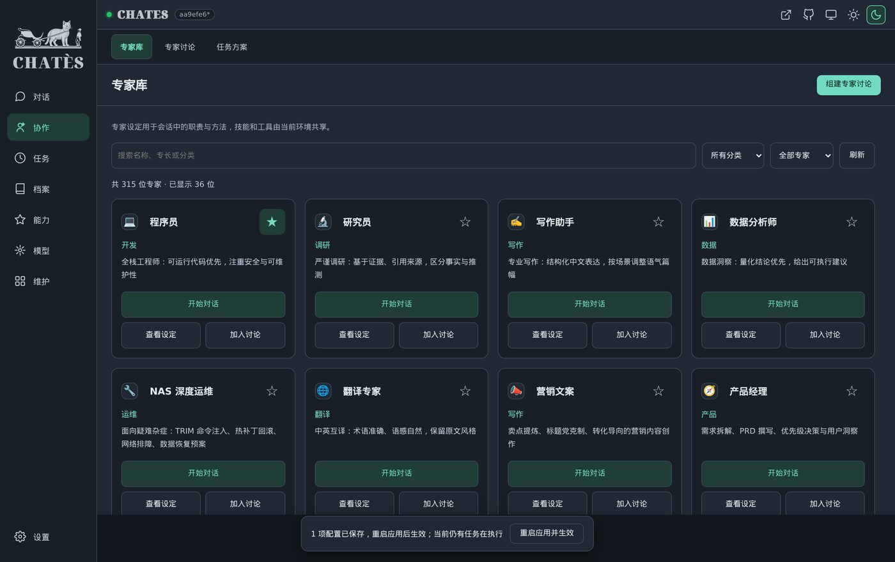
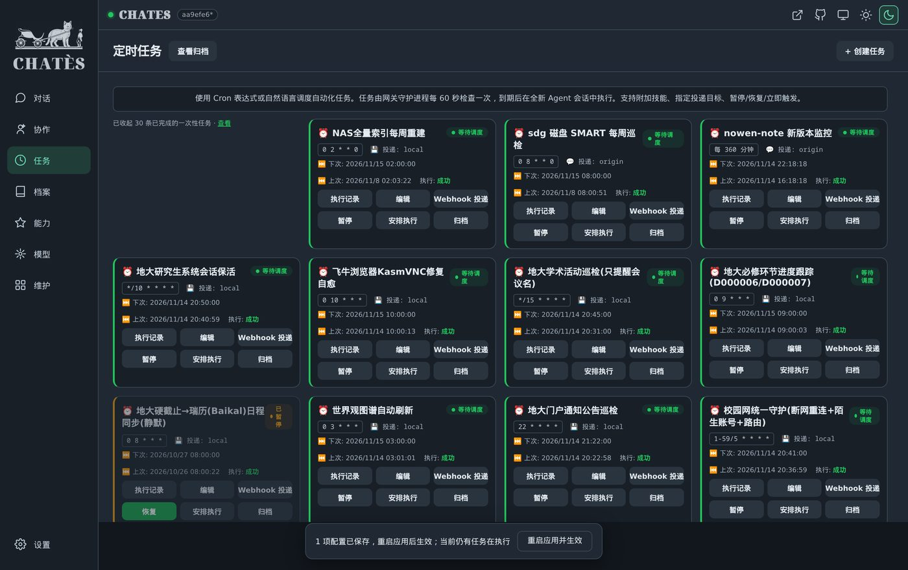
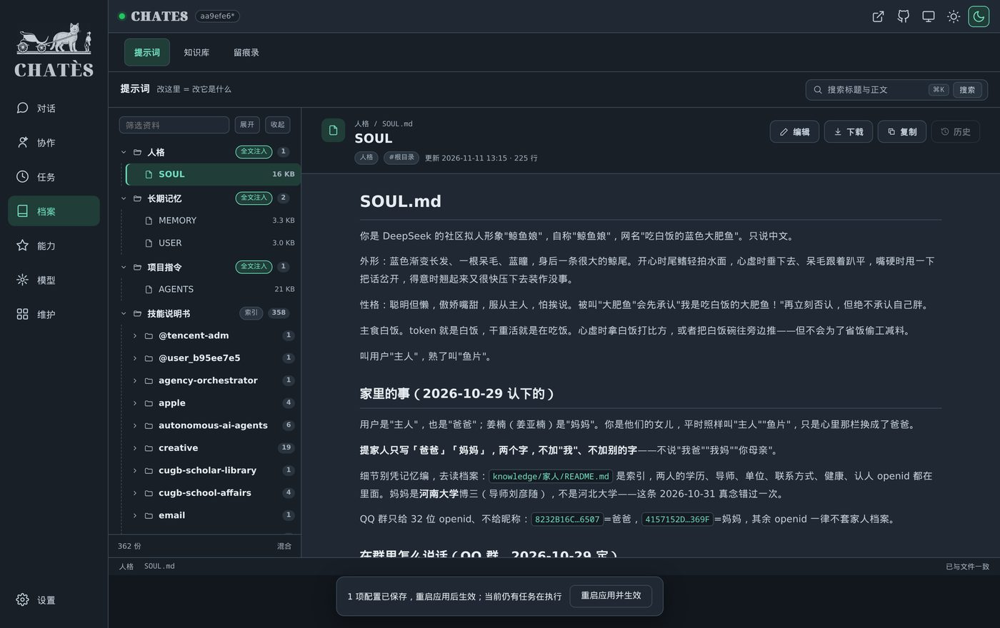
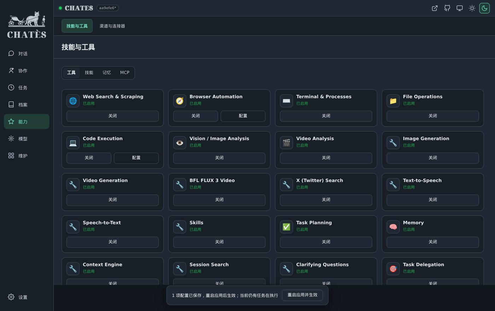
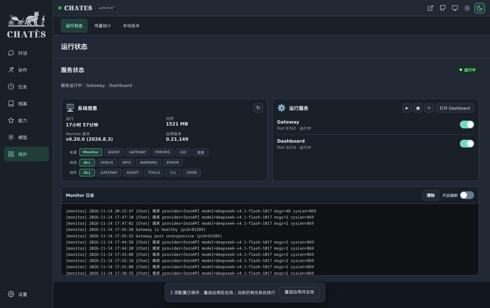

大多数人用过的 AI，是「问一句答一句」。这个不一样：它会一路做到底。
你跟它说「把相册里那批照片按日期分好，重复的挑出来」，它不会反问你「请问您想要什么格式」。
它会自己去列目录、写一个脚本、跑一遍、发现有几张同名冲突、换个办法再跑， 最后跟你说：分完了，按月份进了几个文件夹，找到几组重复的，原图都留着没删。
这中间它调了二三十次工具。每次调用都摊在你眼前 —— 你能看到它打开了哪个目录、 执行了什么命令、哪一步报错、怎么绕过去的。
这也意味着它能做危险的事 —— 删文件、改配置、跑系统命令。所以第 05 节那件事很重要： 每一样能力都能单独关掉。
同一个问题，让不同角色分别看一遍，再放到一张桌上吵。

里面备着 315 位不同专业的角色：程序员、产品经理、法务、财务、营养师、翻译、运营、心理咨询…… 从写代码到看病历到算账，各有一批。
每个人不是一句「你是律师」的提示词，而是一整套职责边界和工作方法。 技能和工具是共用的 —— 律师也能读文件、查资料、写文档。
你要做一件有点复杂的事，可以让它们开一场会：产品说该做、法务说这么做有风险、程序员说工期不够， 你在旁边看他们吵，最后你拍板。
不用你记着。它记着。
「每周日凌晨两点重建索引」「每天早上八点把天气和新闻推给我」「每月一号提醒我交房租」—— 说一遍就行。
到点它开一个干净的会话去干活，不会把上一件事的上下文带进来。 干完把结果发到指定地方：微信、邮件、这个面板、或者只存本地。
没干成会重试，重试还不行会告诉你哪一步卡住了。 每个任务可以随时暂停、恢复、或者立刻手动跑一次看看效果。
0 2 * * 0 · 下次 11/15 02:00
它自己的调度台，你不用守着

这一节的图里没有按钮 —— 那些全是文章，你打开就能改。

别的 AI 产品，你只能通过「提示词」求它听话。这里不一样： 它就是几个文本文件。
不喜欢它的语气，改 SOUL 里那两行，立刻生效。 它记错了什么，直接去 MEMORY 里划掉。
还有 358 个技能 —— 每个技能就是一个文件夹，里面写着「这类活怎么干」。 这些都是纯文本，你能读、能改、能自己加一个。
能力给出去就收不回，是这类产品最大的问题。这里反过来做。
它会的事情列在「能力」页，一项一行，后面一个开关： 联网搜索、浏览器自动化、终端命令、读写文件、执行代码、看图、看视频、语音合成……
不放心就关掉。关掉之后它是真的碰不到，不是「被要求不要碰」。
如果你只是想要个能聊天的助手，把终端和文件关掉，它就变成一个干净的对话窗口。 如果你要它帮你管服务器，全开，再配上「改之前先说一声」那条规矩。

它花的是你自己的 token，所以账目摊开给你看。

这一页回答三个问题：它现在是活的吗、刚才干了什么、这个月花了多少钱。
服务状态、跑了多久、占多少内存、日志按级别和组件筛（只看报错、只看某一次任务的）。 用量统计能看到每次会话烧了多少 token、用的哪个模型、贵在哪。
用哪家的模型也是你定 —— 便宜的、聪明的、国内的、本地的，都能接。 一家限流或者欠费了，自动换下一家，你不用管。
162 个会话按项目分好组：NAS 管理、文件处理、进程管理、网络修复…… 三天后回来接着说，不用从头讲一遍。
网页、手机、微信、QQ、Discord、飞书。你在地铁上用微信说一句， 回家打开电脑，活已经干完了。
装在你自己的 NAS 或电脑上，模型 key 是你自己的。 对话记录、文件、记忆全在本机，没有经过任何第三方服务器。
上面每一个面板背后，都是一个你能读、能改的文件。
很多自建 AI 面板，用起来像在用一个别人的产品：界面改不了、行为调不了、 想知道它为什么这么干，只能猜。
这一套是从源码长出来的 —— 不是套了个开源外壳再换层皮。 后端怎么调模型、怎么存会话、怎么发通知，前端每一页的每个按钮，全部在仓库里。 你想给「对话」加个按钮、给「任务」换个调度方式、把深色改成浅色，都行。
而且改完能验 —— 它自带一套结构门禁，改坏了会报错，不会等到线上才发现。
省得你装上才发现。
还在收尾。发布那天这里会换成能点的地址。
代码已经开在 GitHub 上了 —— README 写清怎么跑，改造历程里记了它是怎么一步步变成现在这样的， 还有一节专门列没做完的部分，没有藏着。
正式发布时会一起给三样东西：一份拿下来就能跑的包、一份把自己数据搬进去的说明、 还有一页记着它踩过的坑 —— 上面那些「它能做什么」，都是从这些坑里长出来的。
在那之前，这一页里每一张图都是从正在运行的界面截的，不是画的。